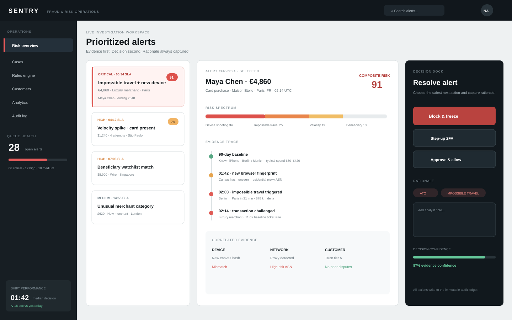

FRAUD OPS · EVIDENCE CORRELATION · HIGH-CONSEQUENCE DECISIONS
Sentry
A risk-operations concept exploring how an analyst can triage an alert, compare evidence and record a defensible decision without losing context.

High-density data is useful only if it supports a defensible decision
Sentry is a self-initiated fraud and risk operations prototype. Its problem is not “make a cyber dashboard”: analysts need to compare transaction, identity, device, network and historical signals before actions that can affect a customer or expose a business to risk.
Sentry is not connected to a bank, payment processor, KYC provider or fraud model. Risk scores, device signals, rules, cases, customer profiles, losses and analyst decisions are simulated. No MTTD reduction, false-positive improvement or fraud-loss prevention is claimed.
Keep priority, evidence and consequence in one operating model
Hypothesis: a prioritized alert queue, unified evidence workspace and persistent decision dock can reduce context switching while preserving explainability, override paths and an auditable rationale.
A specialist reviewing uncertain events under operational pressure.
Understand why an event is risky, what conflicts exist and what action is justified.
Future target: resolve cases efficiently without increasing false-positive customer friction.
The UI surfaces model/rule evidence and uncertainty rather than declaring truth.
Product principles
Fraud tooling separates automated rules from human review for a reason
Benchmark: Stripe Radar documents ordered rule categories including authentication, allow, block and review behavior; Sift documents feedback/manual-review workflows. These sources support two product patterns used in Sentry: rule precedence matters, and uncertain cases need a review path rather than a binary confidence theater.
Rules can have different actions and an execution hierarchy.
A risk score alone cannot explain conflicting policy intent.
Show triggered rules and conflicts inside the evidence workspace before resolution.
Industry patterns do not validate Sentry’s specific information architecture; direct analyst testing is still required.
Benchmark source: Stripe Radar Rules 101 ↗ · Benchmark source: Sift feedback workflow ↗
Three zones mirror the operating decision
What needs attention, current status and enough context to choose the next case.
Transaction, identity, device, network, beneficiary, rules and history become one comparison surface.
Allow, block/freeze, verification or escalation stay persistent but require rationale.
Resolution becomes inspectable history rather than a disappearing button click.
The console also includes cases, rules, customers, analytics and audit surfaces. They support the flagship investigation flow rather than competing with it for attention.
Density was treated as a product constraint, not a styling preference
Familiar, but forces the analyst to repeatedly leave the queue and lose comparative context.
Keeps priority, evidence and decision consequence visible at the same time.
Powerful for experts but adds setup/governance cost before the core workflow is validated.
Operations UX must model disagreement and partial certainty
The analyst can inspect precedence and choose a justified manual path.
Step-up verification is an alternative to premature allow/block.
Route the case without erasing current evidence or notes.
Resolve while capturing feedback for future model/rule evaluation.
Other interface states include loading, resolved, frozen/blocked and audit-history views. They are implementation states, not claims about a production risk program.
Visual density is governed by repeated semantics
Sentry uses consistent risk/status semantics, tabular data treatment, reusable evidence-card structures and persistent decision patterns across the console. The implementation is framework-free HTML/CSS/JavaScript, making the interaction model directly inspectable.
A production fraud console would need real authorization, data freshness, model provenance, audit retention, privacy/security controls, role-based permissions, latency/failure handling and regulated operational policies. This prototype demonstrates interaction/system thinking, not production readiness.
Operational speed is only useful if decision quality survives
Research objective: test whether target users can prioritize the right case, build an evidence narrative, detect rule conflicts and record an appropriate resolution without missing critical context.
Explain which evidence drove priority rather than relying on color/score alone.
Correlate transaction, identity, device, network and historical evidence.
Interpret a rule conflict and select a defensible next action.
Find the final rationale and evidence trail after resolution.
Expert validation matters more here than another layer of polish
Whether real analysts prefer the split workspace, whether evidence grouping matches their mental model, whether rule-conflict language is accurate enough for operational use, and whether the information density improves or harms decision quality.
Next: recruit fraud/risk practitioners or clearly labeled adjacent experts, test realistic cases with incomplete/conflicting signals, compare error patterns and rationale quality, then repair the information architecture before adding more analytics or customization.